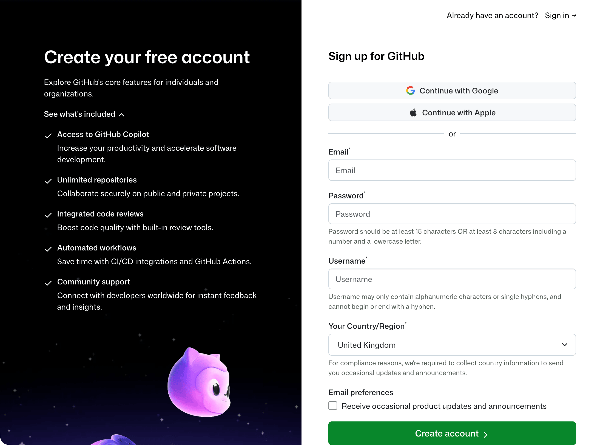
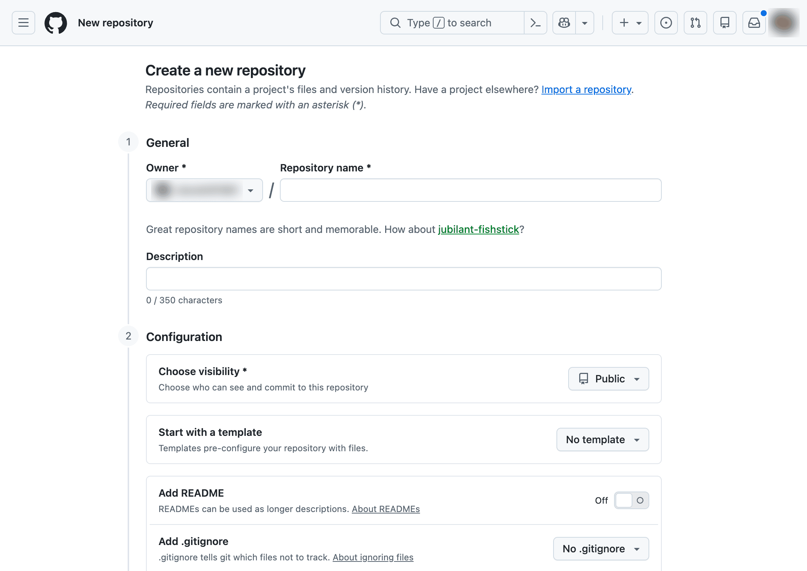
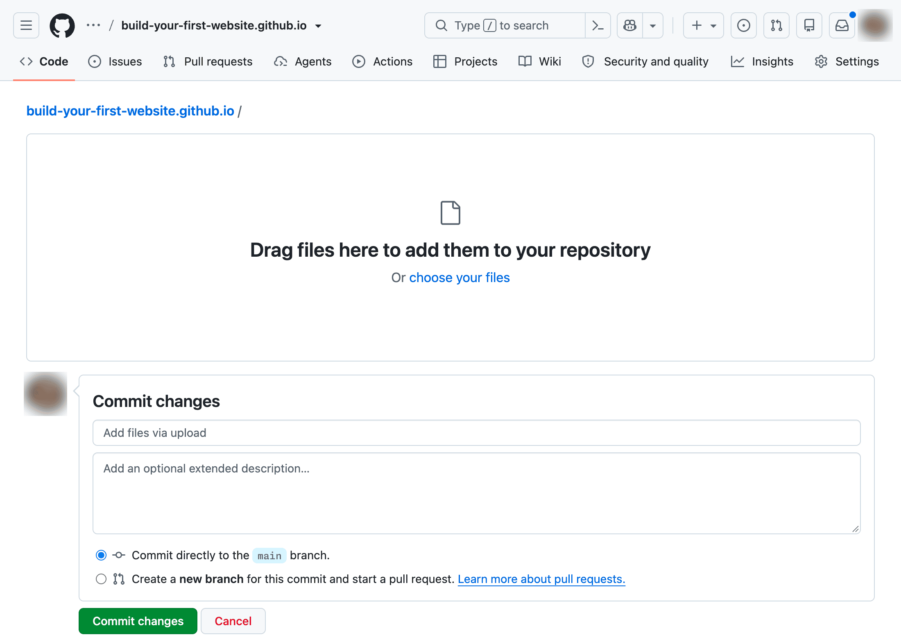
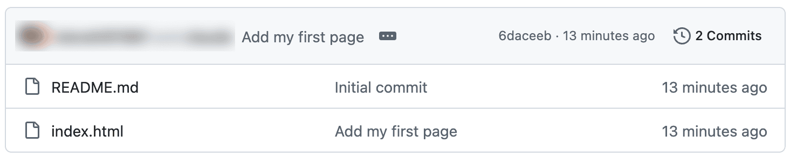
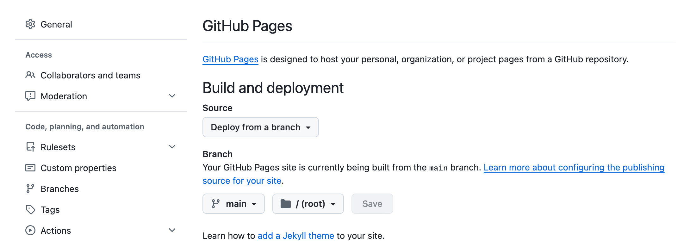

Chapter 3Put your page online
When you visit a website, your browser sends a request to the address you’ve typed. A computer at that address, called a server, answers by sending back the files for the page. Your browser then displays them.
Your page’s file:// address only works on your computer. To let other people see it,
you need to put a copy on a server that’s always switched on and connected to the
internet. You’ll use GitHub Pages, which does this for free.
Create your free GitHub account
GitHub is a website for storing and sharing the files that make up a project. You’ll keep a copy of your website’s files there, and GitHub Pages will publish them.
If you already have a GitHub account, you can skip to the next section.
Go to https://github.com and click “Sign up”. At the time of writing, the form asks for your email address, a password, a username and your country or region.
GitHub’s sign-up form
Choose your username carefully. It will become part of your website’s address, so pick something you’re happy for other people to see.
Click “Create account”. GitHub sends a code to your email address; enter it to verify your account, then sign in.
Checkpoint
You’re signed in to GitHub and can see your dashboard.
Keep your account secure
GitHub may ask you to turn on two-factor authentication. This adds a second check when you sign in, usually a code from an authenticator app on your phone, so a stolen password isn’t enough to get into your account.
If GitHub asks, follow its steps. It will give you some recovery codes, which let you back in if you lose your phone. Keep them somewhere safe, away from your computer, such as a password manager or a printed copy.
It’s worth turning on even if GitHub doesn’t ask. You can find it under your profile picture, in Settings → Password and authentication.
Create a home for your website
GitHub keeps each project’s files in a repository. For now, think of it as a folder on GitHub that keeps a record of every change you make to it.
Click the “+” button near the top-right corner of the page, then choose “New repository”.

The form for a new repository
The repository’s name decides your website’s address. Name it with your username,
followed by .github.io. If your username is sam-smith, for example, the repository
is sam-smith.github.io, and the website will be at https://sam-smith.github.io/.
Use lower-case letters, even if your username contains capitals.
Set the visibility to “Public”. Free GitHub accounts can only publish public repositories, which means anyone can read the files you put there.
Turn on “Add README”. This adds a short text file describing the repository. You don’t need to change any other settings.
Click “Create repository”.
Checkpoint
You can see your new repository, named after your username and ending in .github.io.
Its file list contains README.md.
|
Note
|
Each GitHub account can have only one repository named this way. If you’ve
made one before, you can reuse it, but its existing files will be replaced as you
work through this book. The book’s examples assume your website lives at the root of
an address like https://sam-smith.github.io/.
|
Upload your page
Now copy your page into the repository. In your repository, click “Add file”, then “Upload files”.

The Upload files page
Open your my-website folder in File Explorer or Finder, and drag index.html onto
the upload area in your browser. You can also click “choose your files” and select it.
GitHub saves changes as commits. A commit is a record of what changed, when and why,
and GitHub keeps every one. Below the upload area, enter Add my first page as the
commit message. A commit message is a short description of the change; write it as
if finishing the sentence “This commit will…”.
Leave the option to commit directly to the main branch selected. main is the
version of your project that GitHub will publish. Then click “Commit changes”.
Checkpoint
The repository’s file list now contains README.md and index.html. Clicking
index.html shows your HTML.

The file list after your first upload
Publish with GitHub Pages
Because your repository is named after your username, GitHub usually turns on Pages for it by itself, as soon as it has a file to publish. Check the settings anyway, so you know where they are.
Click “Settings” in your repository’s tabs, then “Pages” in the sidebar. You’ll find it under “Code, planning, and automation”.
Under “Build and deployment”, check the settings:
-
Source: “Deploy from a branch”
-
Branch:
main -
Folder:
/ (root)

Pages publishing from the main branch
If any of these are different, change them and click “Save”. Root means the top
level of your repository, where you uploaded index.html.
Remember that anyone with the address will be able to see this website. Check that you’re happy to share what you’ve written.
Visit your website
Publishing takes a few minutes. Wait a little, then refresh the Pages settings. When your website is ready, you’ll see its address with a “Visit site” button.
Click “Visit site”.
Checkpoint
Your website shows your heading and introductory sentence. The address is your
username followed by .github.io, rather than a file:// address.
If you see a “404” or “Page not found” message, wait a few minutes and refresh. It can
take up to ten minutes. If the page still doesn’t appear, check that the repository’s
name exactly matches your username, that the file is called index.html, and that
the Pages settings match the list above.
Bookmark your website’s address, and bookmark your repository too. You’ll share the website’s address with visitors; the repository is where you’ll go to publish changes.
You’ve published your first web page. It’s plain, but it’s yours, and anyone in the world can visit it.
Publish a change
You now have two copies of your page: the one on your computer, where you work, and the one on GitHub, which is published. To publish a change, you update your copy, check it, then upload it again.
In VS Code, add a second paragraph after the first one:
<p>Here is something else about my subject.</p>
Replace the sentence with something you’d like to say about your subject. Save, then
check it in your browser using the file:// address.
When you’re happy with it, go to your repository and upload index.html again, using
“Add file” and “Upload files” as before. GitHub replaces the existing file with your
new version. Enter a commit message such as Add a second paragraph, and commit the
change.
Wait for it to publish, then refresh your website.
Checkpoint
Your published website shows both paragraphs.
From now on, you’ll make changes on your computer, where you can check them as often as you like, and upload them when you’re ready to publish. Nobody sees your work in progress, and you won’t have to wait for GitHub each time you make an edit.